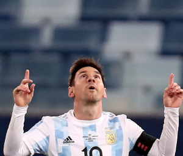

The six-time Ballon d'Or winner not, only ended the 28-year-long wait, for Argentina but also his personal, duck to win an international trophy.
10h
23
As we count down to the start of the global showpiece in Qatar on 20 November, FIFA+ is Fshowcasing 100 of the greatest moments in FIFA World Cup history.
Watch LiveThe six-time Ballon d'Or winner not, only ended the 28-year-long wait, for Argentina but also his personal, duck to win an international trophy.

Cristiano Ronaldo has won the Euro 2020 Golden Boot as no one on England or Italy duty managed to surpass his tally in the final on Sunday.


Kevin De Bruyne is still struggling with a dead feeling on the left hand side of his face after a double fracture but said it would not hinder.

Argentina won its first major title in 28 years on Sunday when an Angel Di Maria goal gave the side a 1-0 win over Brazil.

Kylian Mbappe was designated as the fifth penalty taker for France but the PSG striker saw his tame effort being saved by Yan Sommer.

Although this Argentina team have been built around Lionel Messi, Casemiro is adamant that Albiceleste captain ahead of this weekend's Copa America final.

Barcelona prodigy Pedri absolutely sparkled all night long, showing off his prodigious talent time and time again over the course of the game.
Argentina players went wild after securing their first Copa America in 28 years and celebrated their victory against Brazil in the final.

en Argentina step out onto the Maracana pitch for their Copa America final against Brazil on Saturday evening.

Gianluigi Donnarumma saved two crucial penalties as the Euro 2020 final finished level after 120 minutes.

Denmark have named their 26-man squad for Euro 2020, with Kasper Schmeichel and Pierre-Emile Hojbjerg among those included.